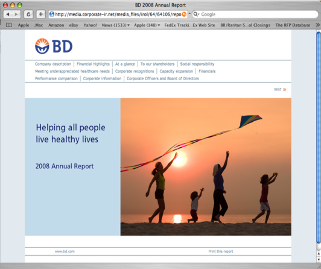

The BD online Annual Report is fully interactive and is designed to reflect the look and content of the printed version but configured for web optimization. The index is fully searchable, links appear throughout the site and the text and photos are identical to the printed version. Digital is rapidly replacing print as the primary method of institutional communication. As a result, many of our print clients have turned to us to help update their presence and messaging on the web. www.bd.com |
 |